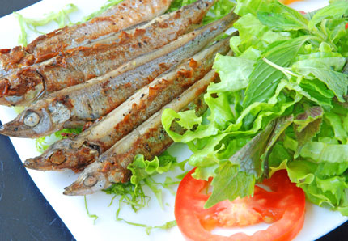

Cá trứng nướng muối ớt

- Khẩu phần 4
- Chuẩn bị 5 phút
- Thực hiện 10 phút
Nguyên liệu
- 200g cá trứng
- 1 thìa cà phê tỏi băm
- 1 thìa cà phê ớt băm
- 1 thìa súp tương ớt, 1/2 thìa cà phê muối ớt, 1
thìa cà phê nước mắm , 1 thìa cà phê hạt nêm từ Thịt Thăn, Xương Ống
và Tủy - Bổ sung Vitamin A, 1 thìa súp dầu ăn; Rau răm, muối hạt, chanh ớt
dùng kèm
Hướng dẫn thực hiện
- Cá trứng rã đông, rửa sạch, lau khô. Ướp cá với tỏi băm, ớt băm, tương
ớt, muối ớt, nước mắm , hạt nêm từ Thịt thăn và Xương ống, dầu ăn, đảo
nhẹ cho cá thấm gia vị
- Nướng cá trên lửa than (hoặc lò viba, lò nướng) cho cá chín vàng
- Lấy cá ra đĩa, ăn kèm rau răm và muối hạt giã nát, nếu thích ăn chanh
thì vắt thêm chanh vào muối hạt.